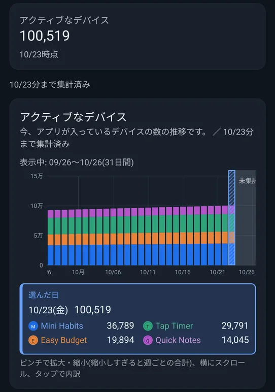
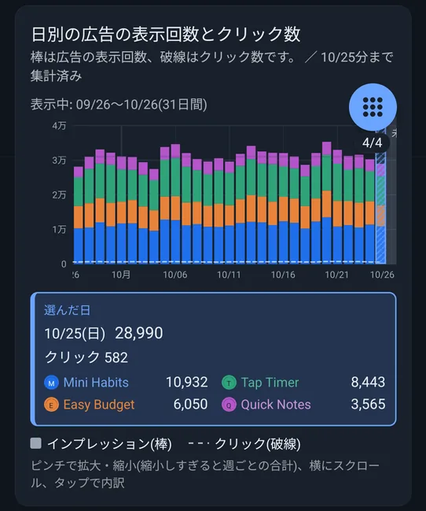
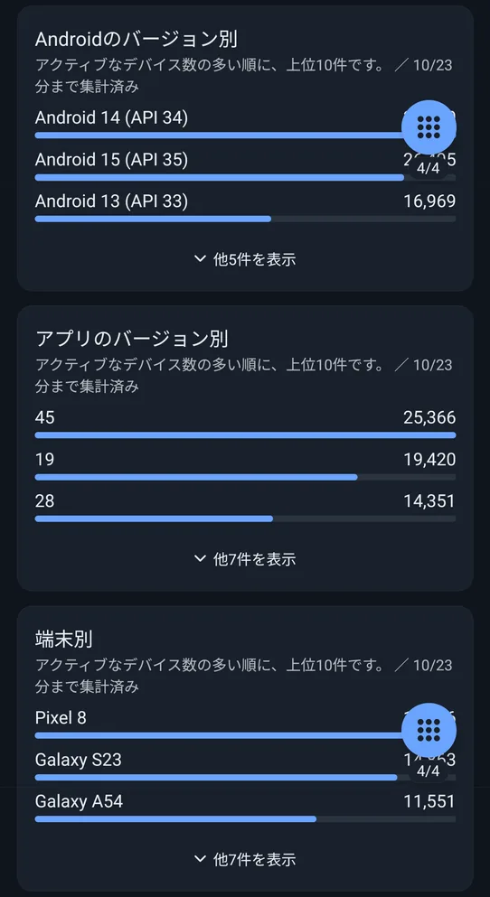
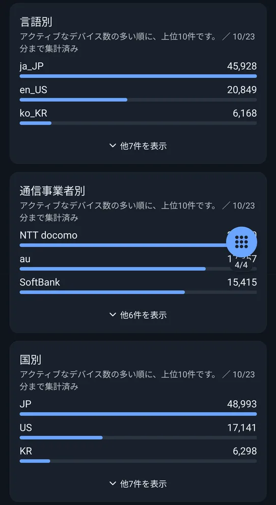

📖 はじめに（この画面でできること）
「ユーザー」タブは、アプリを使っているデバイスの数と、その内訳を確認する画面です。
アクティブなデバイスはPlayのレポートから、広告の表示回数とクリック数はAdMobから取得します。
🛠️ 詳しい使い方
STEP 1
アクティブなデバイス
いま、アプリが入っているデバイスの数を、最新の値と、日ごとの推移のグラフで表示します。グラフはアプリごとの積み上げで、タップすると、その日のアプリごとの数が出ます。

最新の数と、日ごとの推移
STEP 2
日別の広告の表示回数とクリック数
棒が広告の表示回数、破線がクリック数です。タップした日は、その日の表示回数・クリック数と、アプリごとの表示回数が出ます。

棒は表示回数、破線はクリック数
STEP 3
アクティブなデバイスの内訳
アクティブなデバイスを、次の6つの切り口で、多い順に上位10件表示します（最新の日の数字です）。
- Androidのバージョン別
- アプリのバージョン別
- 端末別
- 言語別
- 通信事業者別
- 国別
横棒の長さで、割合を比べられます。「他◯件を表示」を押すと、10件までの残りを開けます。どのバージョン・どの端末のユーザーが多いかを知るのに役立ちます。

Androidのバージョン・アプリのバージョン・端末別

言語・通信事業者・国別
❓ よくある質問（FAQ）
Q 「アクティブなデバイス」とは何ですか？
いま、アプリが入っているデバイスの数です。Playのレポートをもとにしているので、数日遅れの数字になります。
Q 内訳は、全期間の数字ですか？
いいえ。最新の日の、アクティブなデバイス数の多い順に、上位10件です。
Q ユーザー数は、実際の人数ですか？
いいえ。人ではなく、デバイスの数です。1人が複数の端末で使っていれば、複数に数えられます。